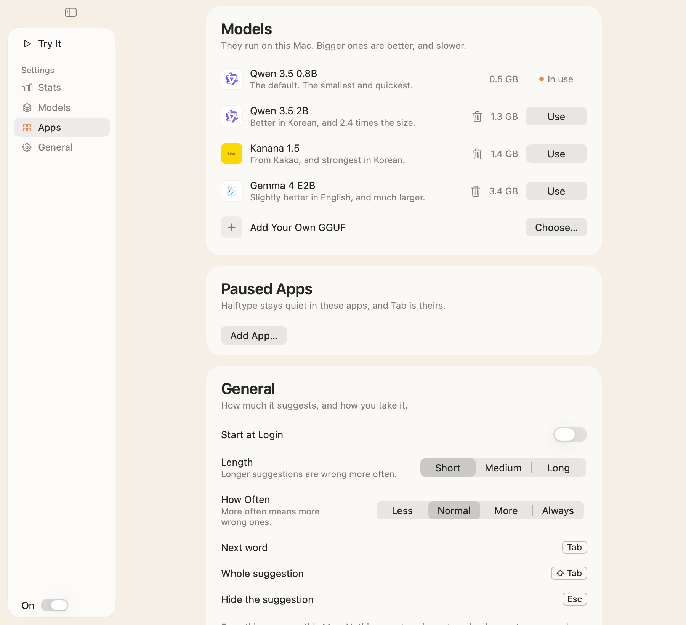

Happy birthday
Happy birthday
For macOS 26 on Apple Silicon
Inline suggestions in almost any Mac app, from a model that runs on your Mac. Tab takes them.
brew install --cask halftype
Grey text finishes your sentence. Tab takes it.
Almost any app with a text field.
Tab presses the keys that are left, so your input method finishes the syllable.
Tab presses
Accessibility only. No Screen Recording.
Model downloads from Hugging Face, SHA-256 checked, and a daily update check.
Settings, models and four counts a day. No text, no logs.
Secure fields are skipped.

| Halftype | Yes | Measured: 0.69 keys saved per mid-syllable request |
|---|---|---|
| macOS predictions | No Korean | Apple offers inline predictions in English, French and Spanish |
| Cotabby, KeyType | Not found | No completion through a composing syllable in their source |
| Cotypist | Not tested | Closed source |
Each app’s default model, on one M5 with 16 GB, 2026-11-09. At rest is 9 minutes after launch, with no typing; memory is macOS’s footprint. Halftype’s figures are from scripts/e2e.sh --measure, the others from docs/site/compare/idle.sh. KeyType is left out at rest: it starts only once it has Accessibility, then keeps its model until you quit. Cotabby had no Accessibility either, but had loaded its model. How it’s measured.
An early release. The README has the rest.
macOS 26 on Apple Silicon.
Nothing. It’s open source, MIT.
Mid-line, and during Secure Input.
Mostly. Only some are tested.
네, 두벌식에서요. 영어보다는 약합니다.
Yes, with Swift 6.2.